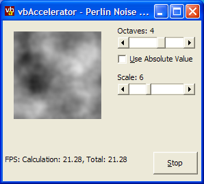

VB Perlin Noise (32K)
VB Perlin Noise (32K)
 1 Nov 2003
1 Nov 2003
First Posted

Perlin Noise
Perlin Noise, named after its inventor Ken Perlin, is a widely used texturing primitive in two- and three- dimensional image creation. The Perlin Noise function generates a smoothly interpolated space of pseudo-random values which can be used as the basis for the procedural generation of realistic natural textures, such as marble, clouds, grass and many others. This article demonstrates the Perlin Noise function in VB. A future article will look at using the output to generate natural textures.
About Perlin Noise
The best place to start to find out about the Perlin Noise function is this amusing presentation given by Ken Perlin, which walks through the history and description of the noise function, its uses and along the way some stunning images including a very furry "tribble".
The fundamental algorithm is as follows:
- Given an input point
- For each of its neighbouring points:
- Pick a pseudo-random gradient vector. The vector is described as pseudo-random because for the same point you must always have the same value, even if within the grid the values are randomly chosen. (This is the effect of the "Seed" function in computer random number generators).
- Compute the inner product of the gradient between the neigbouring points.
- Interpolate between each of the inner products using a weighted cross-fade curve.
A naive implementation of this algorithm has a high computational cost. Luckily, the algorithm has been investigated in terms of direct hardware implementation, which means many optimisations have been discovered. The implementation provided in this sample is a direct translation of Ken Perlin's Java Reference Implementation, published at http://mrl.nyu.edu/~perlin/noise/. If you take a look at it, you'll see that it includes the noise generation function and lookup tables to simplify each stage of the process. I would attempt to describe the function in detail, but find myself unworthy in the face of the leaps of imagination it must have taken to write this implementation, so I'll simply bow down and offer my respect! Note that one further optimisation which could be applied to this implementation is to inline the lerp and grad functions (although it is likely the improvement you'll get by doing that won't warrant the tedious difficulty of implementing it).
Using Perlin Noise
The demonstration application provides a class, cPerlin3D which contains the VB version of the code. The constructor for this class sets up the lookup table that is used to generate the noise function; then there is one function, Noise which returns the output value of the noise function for a particular coordinate in 3D space. The output value is a Double between -1 and 1, and the coordinates can be set to any value you want, as the noise function is continuous in 3D space.
To demonstrate the output of the function, the sample application maps it onto a a DIB Section which is rendered onto screen. With each drawing step, the Z coordinate in 3D space is advanced, so each image is a slice through the 3D space represented by the function.
Three parameters are provided to control the image that is generated:
- Scale
This is used to control how the coordinates of the noise function space are mapped onto the output. You use this zoom in and out of the space. - Octaves
In nature a fractal relationship is often seen, so that as you look more closely into a pattern it often includes smaller versions of itself. The Octaves parameter simulates this effect by adding scaled down versions of the noise function to itself with progressively smaller amplitude. For example, setting Octaves to two means you get the standard noise function plus the same function at half scale with half of the amplitude. Upping the number of Octaves means that the pattern is more complex and more natural looking but also takes longer to generate. - Use Absolute Value
Normally the Perlin Noise function outputs a value between -1 and 1. By taking the absolute value of the output you can modify the look of the noise that's generated, particularly when adding Octaves together.
Conclusion
This article provides an implementation of the Perlin Noise function in VB and demonstrates rendering the output to an image. Stay tuned for future articles which will look at how to use this to generate sky, marble and wood textures.